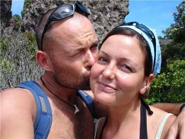

Om båt og mannskap
Petrell
Petrell er en aldrende dame av merket Hero 101. Hun har i de senere år fått en ansiktsløftning, og gjort klar til jordomseiling. Båttypen Hero 101, er for de fleste blitt kjent gjennom boken Sorgenfri, som handler om tre kompiser på jordomseiling, via Antarktis.
Navnet Petrell betyr stormfugl. Hun liker å flyte på vinden, og skal være rustet for det meste av vær som måtte komme. Bank i bordet!
Petrell er en av to båter som har fått betegnelsen Flotteste cruiser/racer, og ble faktisk brukt som utstillingsbåt på messer seint på 70 tallet.

Petrell
Petrell er en aldrende dame av merket Hero 101. Hun har i de senere år fått en ansiktsløftning, og gjort klar til jordomseiling. Båttypen Hero 101, er for de fleste blitt kjent gjennom boken "Sorgenfri", om tre kompiser på jordomseiling, via Antarktis. Navnet "Petrell" betyr stormfugl. Hun liker å flyte på vinden, og skal være rustet for det meste av vær som måtte komme. Bank i bordet!
Petrell er en av to båter som har fått betegnelsen "Flotteste cruiser/racer", og ble faktisk brukt som utstillingsbåt på messer seint på 70 tallet.
HERO 101 ble første gang bygget i 1975. Etter deltakelse og 6. plass i VM det året, ble det besluttet å støpe former. På Storsand i Hurum ble det startet selvbygging, og til nå er det bygget over 70 Hero 101 i Norge.
Lengde: 10,20m
Vannlinje: 7,80 m
Bredde: 3,22 m
Dybde: 1,80 m
Vekt: 4,4 tonn
Storseil: 18 m2
Kryssfokk: 25 m2
Genoa 1: 43 m2
Spinnaker: 100 m2
Køyer: 6
Konstruktør: Eivind Amble
Mannskap
Oppvokst i Bergen med tette regnbyger, så Frode fort nytte av båt. Helger og ferier ble tilbrakt i Osterfjorden, gjerne med vind i seilene. Sommeren 2000 ble båten kjøpt, en Hero 101 – av god årgang, 1979. Dette var samme type båt som den berømte ”Sorgenfri”, som seilte rundt jorden, via Antarktis, på fire år.
Frode var klar for jordomseiling. Han hadde begynt å pakke badetøy og fotoapparat, da det dukket opp en som ville være med. Marit, av samme årgang som båten, skulle bare ta en utdanning først, så var hun klar. En annen detalj gjenstod, Marit hadde aldri vært i båt før… En landkrabbe med studielån er neppe førstevalget når reiseselskap skal velges, men sånn skulle det gå... Fyttirakkern så bra!

Frode Nygaard Knutsen
Kaptein, dagdrømmer, knutemester og fridykker.
Frode jobbar som automasjonsingeniør i Aker Kværner Elektro, og har vore der i snart 10 år. Før fuglane fis, er Frode på plass i kontorstolen, og i ferd med å flytte tal rundt om på skjermen, medan linkar om segling og spanande reisemål ligg tett i tett nedst på sida. Erfaringen som elektriker er noe som har kommet svært godt med, bpde hos Petrell og blant hennes medsøstre.
Frode er bygutt, oppvaksen med brustein under skoa og duebæsj på taket. Han skjøna fort at dette ikkje var ein verande stad for ein explorar og eventyrar. Guten visste rå og reiste innover i Osterfjorden så snart han kunne. Her kunne han dure rundt i farfaren sin båt. Nyfikjen på kva han kunne gøyme seg bak neste nes, gjekk dagane og bensinkvoten fort. Frøet var lege, spira byrja å vekse. Undrar på kva som ligg bak det fjellet… den horisonten..?
Marit Midtgård
Navigatør, dagdrømmer, kaffikjerring og skribent.
Marit er utdannet sosionom, men har vel egentlig ikke fått anledning til å praktisere som det, annet enn privattimer ombord i Petrell. Det er slett ikke å putte under en stol at læren om menneskelige relasjoner og privatøkonomi kan komme godt med på en slik tur…
Marit er vokst opp i Hillesvåg, i dalstrøka innafor, hvor det verken var duebæsj på taket eller cappuccino. Å si at Marit er båtvant, er en sterk overdrivelse. Skjønt hun har tatt noen åretak når pappa Emil var på ørretfiske.
Hun stilte en betingelse, da Frode lokket henne med på båttur: ”Du må få meg til å like dette, da er det utrolig hva som kan læres”. Mye er lært, knuter er knytt, vennskapsbånd er knytt, og til tider er nakkemuskler knytt. Men, ja, nå har hun noen sjømil på baken, og ja, det kjennes bra!